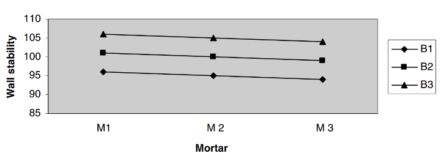

2 Assumptions Underlying Twin Studies
2.1 BUT the heritability of number of fingers and toes in humans is almost certainly very low
First, no geneticist or behavior geneticist ever takes even zero heritability to mean that genes are unimportant for development. What is taken to follow from zero heritability is only that genes are unimportant for explaining the existing phenotypic differences in the population in question (Wray and Visscher 2008). It answers the question, “Do genetic differences explain why the number of fingers differ among humans?” Second, even if a trait is shared by all organisms in a given population, it can still be heritable. When expanding the population tested with more species, now the heritability estimate will answer, “Do genetic differences explain why the number of fingers differ among organisms” 1
2.2 BUT the heritability of wearing earrings in humans is very high
Conceptually, wearing earrings is a perfectly fine trait to measure heritability.2 Although a procedure outside of genetics, the disposition to wear earrings may very well be influenced by genes. Additionally, it is important to remember that heritability studies should take into account the population being studied (Wray and Visscher 2008). Block (1995) ironically explains the utility in this in his criticism of heritability. Since “only women wore earrings” historically, it would be more useful to measure men and women separately since both shared and nonshared environmental effects will give unequal effects. Furthermore, when looking within the sexes, earring use could reasonably be correlated with grandiosity- a trait that seems to be moderately heritable (Luo and Cai 2018).
2.3 BUT using the bucket analogy, it makes little sense to attempt to quantify the relative importance of two different factors that interact with one another to produce an outcome
The bucket analogy seems to be a better representation of an individual’s genotype and environment producing a phenotype rather than a population since the example has only one bucket. To better illustrate why the bucket analogy would be problematic for comparison, if we assume that replacing Billy or Suzy with another Billy or Suzy would change a measure of the bucket3 then we can absolutely quantify the respective variance to a population of buckets with the respective variance attributed to interchanging Billys and Suzys.
2.4 BUT if two men build a wall where one “mixes the mortar and the other lays the bricks, it would be absurd to measure their relative quantitative contributions by measuring the volumes of bricks and of mortar.” (Lewontin 1976, 181–82)
Let us modify the brick–mortar situation in these two respects in order to make it as similar as possible to the heredity– environment problem.4
First, instead of discussing an individual wall, we will discuss a population of potential walls. And second, instead of trying to measure the contributions of different quantities of bricks and mortar, we will attempt to measure the contributions of qualities of bricks and mortar. Suppose there are three kinds of bricks (B1, B2, and B3) and three kinds of mortar (M1, M2, and M3). We want to measure the contributions of these different kinds of bricks and mortar to the stability of walls that arise out of nine different B–M combinations.

Here is the translation manual for the analogy: bricks are genes, mortar is environment, and wall stability is phenotype. The figure above shows a hypothetical distribution of stability values for nine walls (all possible B–M combinations). Now, does it make sense here to quantify the contributions of bricks and mortar? Yes, it does. We see from the graph that switching from one kind of brick to another makes a much bigger difference to the wall stability than changing the kind of mortar. The main effect of B is 5 and the main effect of M is 1. If we want further numerical precision, a simple ANOVA calculation tells us that the variation in stability of these walls is 97 percent due to the brick variation and only 3 percent to the mortar variation. The relation between the two causes is completely additive, and there is no brick–mortar interaction (in the statistical sense).
Notice also that once the population perspective is in place, it becomes possible to quantify the contributions of the two factors even in individual cases. For instance: the wall made of bricks B1 and mortar M1 has a below-average stability exclusively because of the below-average quality of its bricks.
2.5 BUT it is obviously even more absurd to say what proportion of a plant’s height is owed to the fertilizer it received and what proportion to the water, or to ascribe so many inches of a man’s height to his genes and so many to his environment (Lewontin 1976, 181–82).
It is correct to understand that an individual phenotype is the result of the interaction between one’s genes and environment, it is incorrect to say that the variance attributed to one domain cannot be measured. If identical twins have a higher concordance rate of height than dizygotic twins, we can infer with certainty that there is a genetic component to height. see here
To drive this point home, consider a population in which everyone suffers from a given disease, and let us also assume that in this population everyone has the same genotype G1 and is exposed to the same environment E1. Now is this disease genetic or environmental? The truth is that the question just makes no sense unless we are allowed to go beyond that situation and explore whether the disease would still be there under a different regime, say, with some members of the population having genotype G2 (instead of G1), or environment E2 (instead of E1). No difference, no comparison, no causal attribution.↩︎
The only possible change for better results would be to change earring wearing to a continuous trait (duration of earring wearing; size of earrings; number of earrings owned)↩︎
No one denies that changing your genes will change phenotypes like ancestry/sex/sexual orientation (at least with males). Additionally, no one denies that feeding you lead or turning you into a paraplegic may possibly change phenotypes like measured IQ.↩︎
There are two important differences: First, the heredity–environment problem is about populations, whereas the brick–mortar situation is about an individual wall. And second, in the brick–mortar situation, what is claimed to be absurd is measuring the relative quantitative contributions of the two men by measuring the volumes of bricks and of mortar. There is no analogy to the heredity–environment problem in this respect because no one wants to measure the relative quantitative contributions of genes and environments by measuring the quantities of genes and environments. Rather, the idea here is to measure the effects of different kinds of genes and environments.↩︎